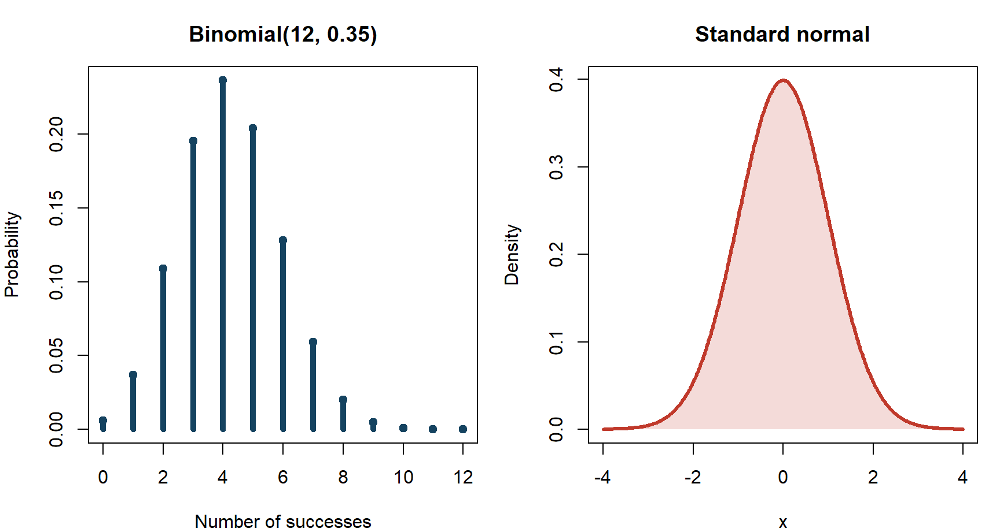
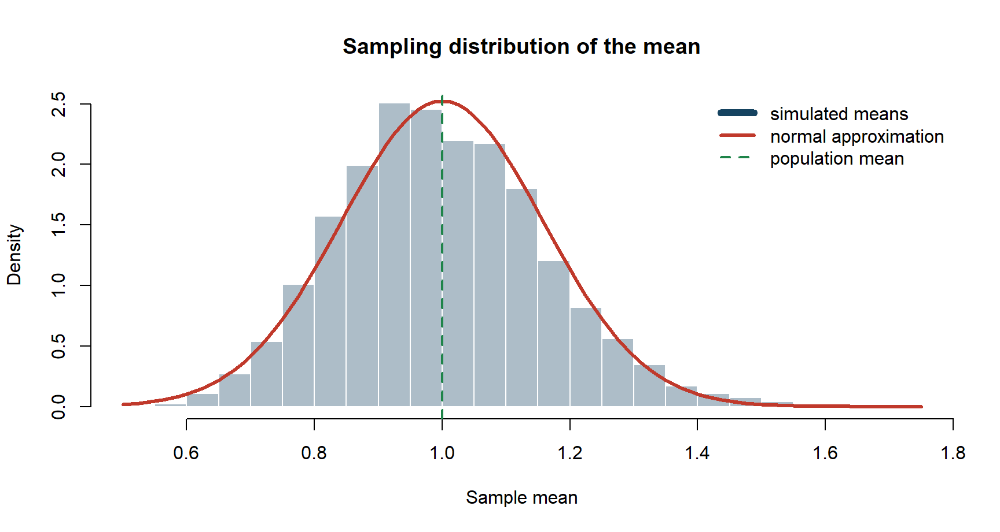
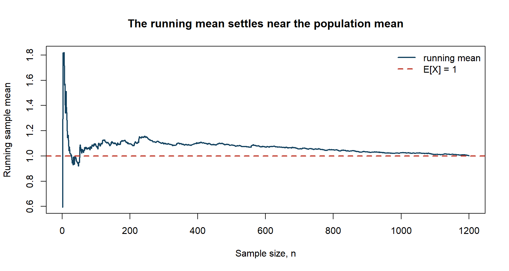
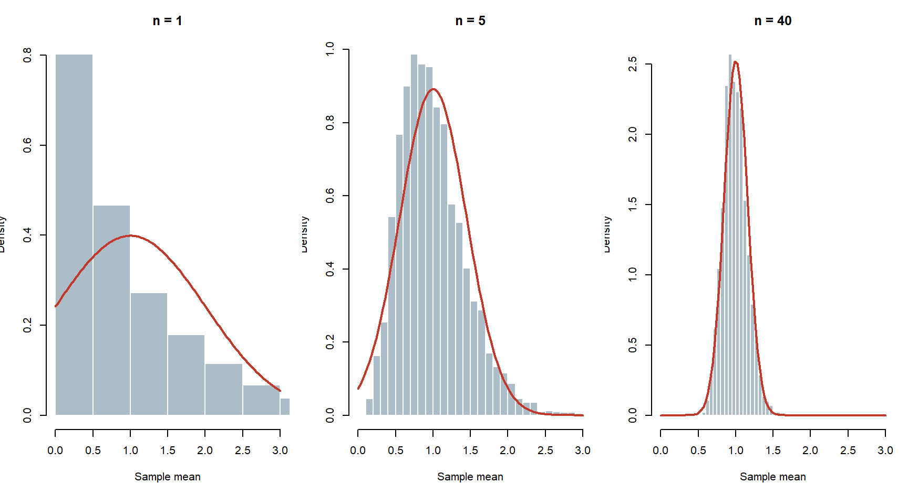
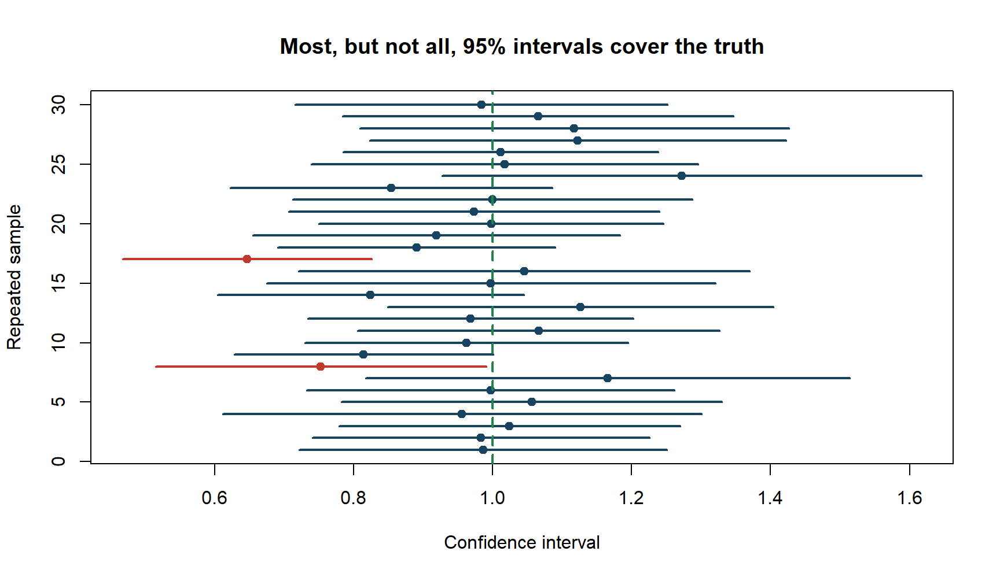
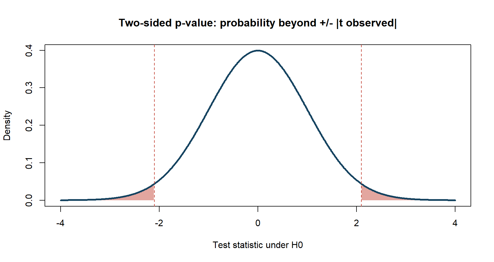

EPPS Math and Coding Camp
Probability and Statistics
Statistics connects an unseen population to observed data
\[ \text{Population} \longrightarrow \text{Random sample} \longrightarrow \text{Estimator} \longrightarrow \text{Uncertainty} \longrightarrow \text{Inference} \]
Probability describes what data could be generated.
Statistics uses generated data to learn about the process.
Our path today
- Probability: how uncertainty is represented.
- Random variables: how outcomes become numerical objects.
- Sampling: why estimates vary across samples.
- LLN and CLT: why large samples help.
- Estimation and inference: what we can conclude from data.
Learning objectives
By the end of this session, you should be able to:
- distinguish a population parameter from a sample statistic;
- compute and interpret probability, expectation, variance, and covariance;
- explain conditional expectation, the LLN, and the CLT;
- distinguish standard deviation from standard error;
- interpret a confidence interval, test statistic, and p-value correctly.
Warm-up: which statements are correct?
- A parameter changes every time we draw a new sample.
- A 5% p-value means the null hypothesis has a 5% probability of being true.
- A larger sample always eliminates bias.
- If \(X\) and \(Y\) are uncorrelated, they must be independent.
Preview: all four statements are generally false.
1. Probability
Outcomes, events, and sample spaces
- An outcome is one possible realization.
- The sample space \(\Omega\) contains all possible outcomes.
- An event \(A\) is a subset of \(\Omega\).
For a binary employment outcome,
\[ \Omega=\{0,1\}, \qquad A=\{\text{employed}\}=\{1\}. \]
Probability obeys three basic rules
For events in \(\Omega\):
- \(P(A)\geq0\).
- \(P(\Omega)=1\).
- If \(A_1,A_2,\ldots\) are mutually exclusive,
\[ P\left(\bigcup_j A_j\right)=\sum_jP(A_j). \]
These axioms generate the other probability rules we use.
“Or” requires subtracting the overlap
For any two events,
\[ P(A\cup B) =P(A)+P(B)-P(A\cap B). \]
Why subtract?
The intersection \(A\cap B\) was counted once inside \(P(A)\) and once inside \(P(B)\).
If \(A\) and \(B\) are mutually exclusive, then \(P(A\cap B)=0\).
Conditional probability changes the reference population
For \(P(B)>0\),
\[ P(A\mid B)=\frac{P(A\cap B)}{P(B)}. \]
The denominator says: restrict attention to cases where \(B\) occurred.
The numerator says: among those cases, count where \(A\) also occurred.
In general,
\[ P(A\mid B)\neq P(B\mid A). \]
Independence and mutual exclusivity are different ideas
Events \(A\) and \(B\) are independent if
\[ P(A\cap B)=P(A)P(B). \]
Equivalently, when probabilities are positive,
\[ P(A\mid B)=P(A). \]
- Independent: learning \(B\) does not change the probability of \(A\).
- Mutually exclusive: \(A\) and \(B\) cannot occur together.
Nontrivial mutually exclusive events are therefore not independent.
The law of total probability decomposes an event
If \(B_1,\ldots,B_K\) form a partition of \(\Omega\), then
\[ P(A)=\sum_{k=1}^K P(A\mid B_k)P(B_k). \]
For a treatment indicator \(D\in\{0,1\}\),
\[ P(Y=1) =P(Y=1\mid D=1)P(D=1) +P(Y=1\mid D=0)P(D=0). \]
Overall probability is a weighted average of group-specific probabilities.
Bayes’ rule reverses the conditioning direction
\[ P(B\mid A) = \frac{P(A\mid B)P(B)}{P(A)}. \]
Using the total probability rule,
\[ P(B\mid A) = \frac{P(A\mid B)P(B)} {P(A\mid B)P(B)+P(A\mid B^c)P(B^c)}. \]
Bayes’ rule updates a prior probability after observing evidence.
Example: selection into a training program
Suppose:
\[ P(D=1)=0.20, \]
\[ P(\text{high motivation}\mid D=1)=0.70, \]
\[ P(\text{high motivation}\mid D=0)=0.25. \]
What is
\[ P(D=1\mid \text{high motivation})? \]
First compute the probability of high motivation using the total probability rule.
Bayes’ rule gives the updated probability
\[ P(H)=0.70(0.20)+0.25(0.80)=0.34. \]
Therefore,
\[ P(D=1\mid H) = \frac{0.70(0.20)}{0.34} \approx0.412. \]
Observing high motivation raises the probability of training participation from 20% to about 41%.
This is also a warning: program participation may be statistically related to unobserved motivation.
Quick check: conditional probability
In a population, 10% receive a policy treatment. Among treated units, 60% have outcome \(Y=1\); among untreated units, 20% have \(Y=1\).
- Find \(P(Y=1)\).
- Find \(P(D=1\mid Y=1)\).
Answer:
\[ P(Y=1)=0.6(0.1)+0.2(0.9)=0.24, \]
\[ P(D=1\mid Y=1)=0.06/0.24=0.25. \]
2. Random variables and distributions
A random variable maps outcomes into numbers
A random variable is a function
\[ X:\Omega\rightarrow\mathbb R. \]
- Discrete example: number of job offers.
- Continuous example: wage or income.
- Binary example: employment status.
The randomness comes from the outcome; the mapping itself is fixed.
PMF, PDF, and CDF answer different questions
- Discrete probability mass function:
\[p(x)=P(X=x).\]
- Continuous probability density function:
\[P(a<X\le b)=\int_a^b f(x)\,dx.\]
- Cumulative distribution function:
\[F(x)=P(X\le x).\]
A density value is not itself a probability; probability is area under the density.
Expectation is a probability-weighted average
For a discrete random variable,
\[ E[X]=\sum_x xP(X=x). \]
For a continuous random variable,
\[ E[X]=\int x f(x)\,dx. \]
Expectation is a feature of the distribution, not necessarily a value that will ever be observed.
Linearity:
\[ E[a+bX+cY]=a+bE[X]+cE[Y]. \]
Variance measures dispersion around the mean
Let \(\mu=E[X]\). Then
\[ \operatorname{Var}(X) =E[(X-\mu)^2] =E[X^2]-\mu^2. \]
The standard deviation is
\[ \operatorname{SD}(X)=\sqrt{\operatorname{Var}(X)}. \]
Standard deviation uses the same units as \(X\); variance uses squared units.
Three distributions appear repeatedly
Bernoulli: \(X\in\{0,1\}\) and \(P(X=1)=p\).
\[E[X]=p,\qquad \operatorname{Var}(X)=p(1-p).\]
Binomial: number of successes in \(n\) independent Bernoulli trials.
Normal: continuous, symmetric, and described by mean \(\mu\) and variance \(\sigma^2\).
Student \(t\), \(\chi^2\), and \(F\) distributions enter classical inference.
R connects the formulas to distributional shapes

Figure 1
Joint distributions describe variables together
For two random variables \(X\) and \(Y\), the joint distribution describes
\[ P(X\in A,\ Y\in B). \]
- A marginal distribution focuses on one variable.
- A conditional distribution focuses on one variable given the other.
- Independence means the joint distribution factors into the product of marginals.
Covariance and correlation summarize co-movement
\[ \operatorname{Cov}(X,Y) =E[(X-E[X])(Y-E[Y])]. \]
\[ \operatorname{Corr}(X,Y) = \frac{\operatorname{Cov}(X,Y)} {\operatorname{SD}(X)\operatorname{SD}(Y)}. \]
- Correlation lies between \(-1\) and \(1\).
- Independence implies zero covariance when moments exist.
- Zero covariance does not generally imply independence.
- Neither covariance nor correlation establishes causality.
Conditional expectation is the language of econometrics
\[ m(x)=E[Y\mid X=x]. \]
\(m(x)\) is the mean of the conditional distribution of \(Y\) given \(X=x\).
The decomposition
\[ Y=E[Y\mid X]+\varepsilon \]
implies
\[ E[\varepsilon\mid X]=0. \]
Regression methods approximate or estimate conditional expectations.
The law of iterated expectations aggregates conditional means
\[ E[Y]=E\left[E[Y\mid X]\right]. \]
Interpretation:
- compute the mean of \(Y\) within each value or group of \(X\);
- average those conditional means over the distribution of \(X\).
This is the expectation analogue of the law of total probability.
Jensen’s inequality links curvature and risk
If \(u\) is concave, then
\[ E[u(X)]\le u(E[X]). \]
A risk-averse decision maker prefers the utility of a certain mean payoff to the expected utility of a risky payoff with that mean.
Curvature, not merely variance, determines how uncertainty affects welfare.
3. Sampling and estimators
A population parameter is fixed; a statistic is random
Suppose \(X_1,\ldots,X_n\) are a random sample from a population.
- Parameter: an unknown feature such as \(\mu=E[X]\).
- Statistic: a function of the sample, such as
\[ \bar X=\frac{1}{n}\sum_{i=1}^nX_i. \]
- Estimator: the rule \(\bar X\) used to estimate \(\mu\).
- Estimate: the numerical value obtained in one sample.
The sampling distribution describes repeated-sample variation
Imagine repeatedly drawing samples of size \(n\) and computing \(\bar X\).
The distribution of those values is the sampling distribution of \(\bar X\).
Under IID sampling with finite variance,
\[ E[\bar X]=\mu, \qquad \operatorname{Var}(\bar X)=\frac{\sigma^2}{n}. \]
More data reduces variance, but the estimate remains random.
Standard deviation and standard error answer different questions
Standard deviation: how dispersed are individual observations?
\[ \operatorname{SD}(X)=\sigma. \]
Standard error: how dispersed is an estimator across repeated samples?
\[ \operatorname{SE}(\bar X)=\frac{\sigma}{\sqrt n}. \]
If sample size quadruples, the standard error is approximately halved.
R simulates a sampling distribution

Figure 2
Bias, variance, and MSE evaluate an estimator
Bias:
\[ \operatorname{Bias}(\hat\theta) =E[\hat\theta]-\theta. \]
Mean squared error:
\[ \operatorname{MSE}(\hat\theta) =E[(\hat\theta-\theta)^2] =\operatorname{Var}(\hat\theta) +\operatorname{Bias}(\hat\theta)^2. \]
An estimator can trade a small amount of bias for a large reduction in variance.
4. Why large samples help
The law of large numbers gives consistency
Under suitable conditions,
\[ \bar X_n\xrightarrow{p}\mu. \]
For every \(\varepsilon>0\),
\[ P(|\bar X_n-\mu|>\varepsilon)\rightarrow0. \]
The LLN says the sample mean becomes close to the population mean in probability.
It does not describe the shape of the remaining error.
R shows convergence as sample size grows

Figure 3
The central limit theorem gives the shape of estimation error
Under suitable conditions,
\[ \sqrt n(\bar X_n-\mu) \xrightarrow{d} N(0,\sigma^2). \]
Equivalently, for large \(n\),
\[ \bar X_n \approx N\left(\mu,\frac{\sigma^2}{n}\right). \]
This approximation is the bridge from estimation to standard errors, confidence intervals, and tests.
The original population need not be normal

Figure 4
LLN and CLT answer different questions
| Result | Main question | Main conclusion |
|---|---|---|
| LLN | Does the estimator approach the target? | \(\bar X_n\to_p\mu\) |
| CLT | What is the approximate distribution of its error? | \(\sqrt n(\bar X_n-\mu)\to_d N(0,\sigma^2)\) |
- LLN supports consistency.
- CLT supports approximate inference.
Both rely on assumptions; neither is a license to ignore dependence, heavy tails, or poor sampling design.
5. Estimation and inference
Method of moments matches sample moments to population moments
Suppose a model implies
\[ E[g(X,\theta_0)]=0. \]
The method of moments chooses \(\hat\theta\) so that
\[ \frac{1}{n}\sum_{i=1}^n g(X_i,\hat\theta)=0. \]
For \(E[X]=\mu\), the sample analogue gives
\[ \hat\mu=\bar X. \]
Maximum likelihood asks which parameter best explains the sample
For IID observations with density or mass function \(f(x;\theta)\),
\[ L(\theta)=\prod_{i=1}^n f(X_i;\theta). \]
The maximum likelihood estimator is
\[ \hat\theta_{MLE}=\arg\max_\theta L(\theta). \]
We usually maximize the log-likelihood:
\[ \ell(\theta)=\sum_{i=1}^n\log f(X_i;\theta). \]
Bernoulli MLE: the sample mean estimates a probability
If \(X_i\sim\text{Bernoulli}(p)\), then
\[ \ell(p) = \sum_{i=1}^n \left[X_i\log p+(1-X_i)\log(1-p)\right]. \]
The first-order condition yields
\[ \hat p=\frac{1}{n}\sum_{i=1}^nX_i=\bar X. \]
The MLE is simply the observed fraction of successes.
A confidence interval combines estimate and uncertainty
If
\[ \frac{\hat\theta-\theta}{\operatorname{SE}(\hat\theta)} \approx N(0,1), \]
an approximate 95% confidence interval is
\[ \boxed{ \hat\theta \pm 1.96\operatorname{SE}(\hat\theta) }. \]
Across repeated samples, approximately 95% of intervals constructed by this procedure contain the true parameter.
Confidence intervals vary from sample to sample

Figure 5
Hypothesis testing begins with a null claim
Example:
\[ H_0:\theta=\theta_0 \qquad\text{versus}\qquad H_1:\theta\neq\theta_0. \]
The standardized test statistic is
\[ t=\frac{\hat\theta-\theta_0}{\operatorname{SE}(\hat\theta)}. \]
Under \(H_0\), a large absolute value of \(t\) is evidence against the null.
At the 5% level in a two-sided large-sample test, reject when \(|t|>1.96\).
Type I and Type II errors are asymmetric
| Decision | \(H_0\) true | \(H_0\) false |
|---|---|---|
| Reject \(H_0\) | Type I error | Correct rejection |
| Do not reject \(H_0\) | Correct non-rejection | Type II error |
- Significance level \(\alpha\): probability of a Type I error under the null.
- Power: probability of rejecting a false null.
Reducing one error probability can increase the other unless information increases.
A p-value measures incompatibility with the null
The p-value is the probability, assuming the null is true, of observing a test statistic at least as extreme as the one observed.
For a two-sided asymptotic normal test,
\[ p\text{-value} =2\left[1-\Phi(|t_{obs}|)\right]. \]
It is not \(P(H_0\text{ is true}\mid\text{data})\).
A small p-value is evidence against \(H_0\) relative to the assumed model.
R displays the two-sided p-value

Figure 6
Statistical significance is not economic significance
Suppose an estimated policy effect is
\[ \hat\theta=0.002, \qquad \operatorname{SE}(\hat\theta)=0.0005. \]
Then \(t=4\), so the estimate is statistically distinguishable from zero.
But whether an effect of \(0.002\) matters depends on units, costs, baseline risk, and the decision context.
Always report and interpret the estimate, its uncertainty, and its substantive magnitude.
A larger sample does not solve every problem
Larger \(n\) often reduces sampling variance, but it does not automatically fix:
- selection bias;
- omitted variables or endogeneity;
- measurement error;
- dependence ignored by the standard error;
- model misspecification;
- a sample that does not represent the target population.
These ideas become the first regression toolkit
In a regression model,
\[ Y_i=X_i'\beta+u_i, \]
we use the same sequence:
- define a population target \(\beta\);
- construct an estimator \(\hat\beta\);
- study bias, variance, and consistency;
- derive an approximate sampling distribution;
- compute standard errors, intervals, and tests.
Probability is not separate from econometrics; it is its foundation.
Practice: one empirical estimate
A sample of \(n=400\) workers gives
\[ \bar X=52.0, \qquad s=12.0, \]
where \(X\) is weekly hours worked.
- Estimate the population mean.
- Compute the standard error.
- Construct an approximate 95% confidence interval.
- Test \(H_0:\mu=50\) using a two-sided large-sample test.
Practice solution
Point estimate:
\[ \hat\mu=52.0. \]
Standard error:
\[ SE(\bar X)=\frac{12}{\sqrt{400}}=0.6. \]
Approximate 95% confidence interval:
\[ 52\pm1.96(0.6) =52\pm1.176 =[50.824,53.176]. \]
Test and interpretation
\[ t=\frac{52-50}{0.6}=3.33. \]
The two-sided p-value is approximately
\[ 2[1-\Phi(3.33)]\approx0.0009. \]
We reject \(H_0:\mu=50\) at conventional significance levels.
The sample provides evidence that the population mean differs from 50 hours; the estimate is about 2 hours higher.
Common interpretation errors
- “The parameter has a 95% probability of being inside this realized frequentist interval.”
- “A p-value of 0.03 means the null has a 3% probability of being true.”
- “Failure to reject proves the null.”
- “A significant association is causal.”
- “A narrow confidence interval guarantees the study is unbiased.”
Each statement confuses sampling uncertainty with a different inferential question.
Exit ticket
- What is the difference between a parameter and an estimator?
- What is the difference between a standard deviation and a standard error?
- What does the LLN tell us? What does the CLT add?
- Give a correct one-sentence interpretation of a p-value.
- Name one problem that a larger sample does not automatically solve.
Keep this mental map
\[ \boxed{ \begin{array}{c} \text{Probability}=\text{model of uncertainty}\\[3pt] \text{Estimator}=\text{random rule based on a sample}\\[3pt] \text{LLN}=\text{closeness to the target}\\[3pt] \text{CLT}=\text{shape of estimation error}\\[3pt] \text{SE}=\text{sampling uncertainty}\\[3pt] \text{Inference}=\text{estimate + uncertainty + assumptions} \end{array}} \]
Questions?
Primary reference: Hansen, Probability and Statistics for Economists, Chapters 1-8, 10-11, and 13-14.